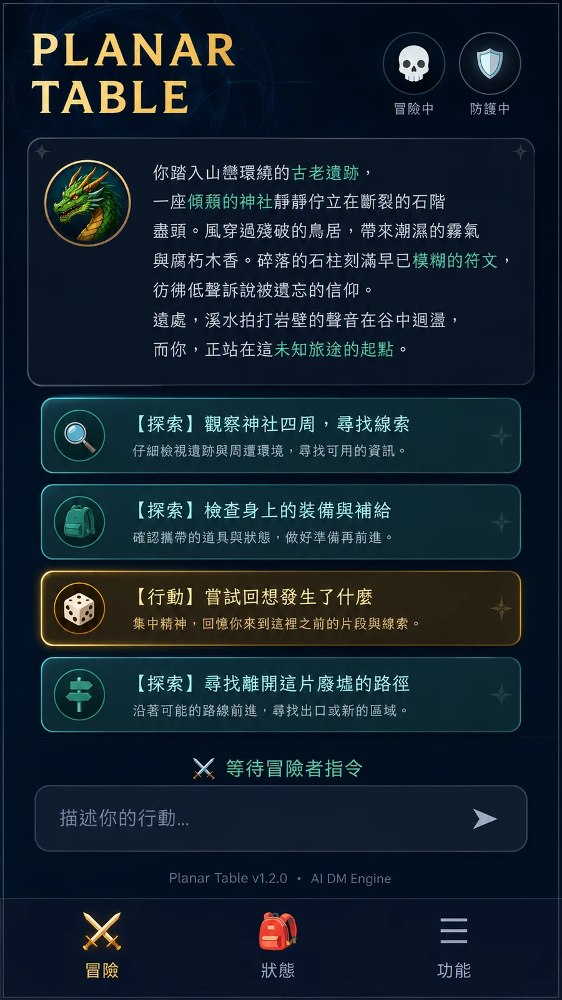
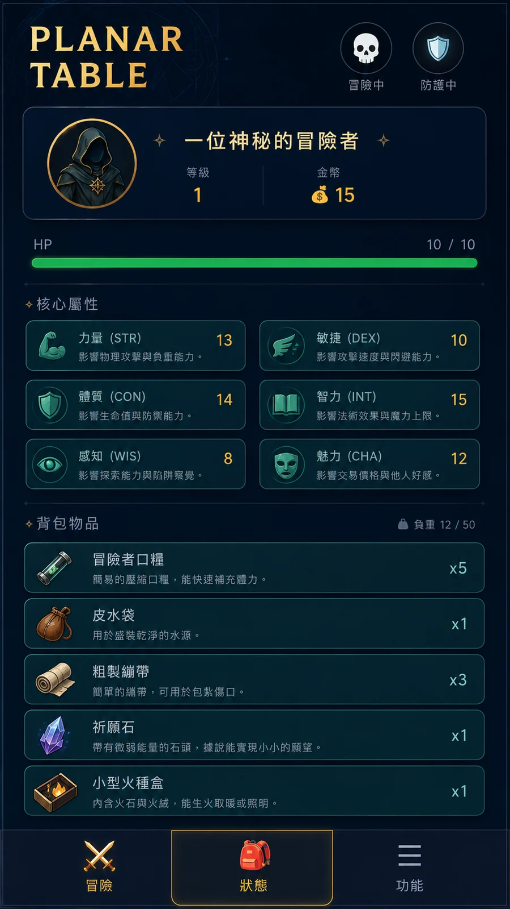
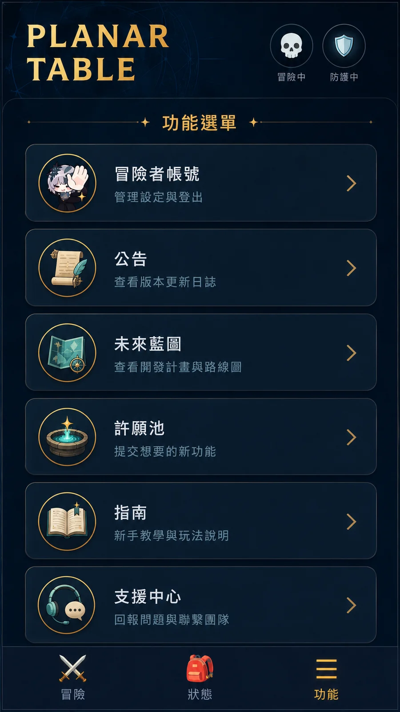
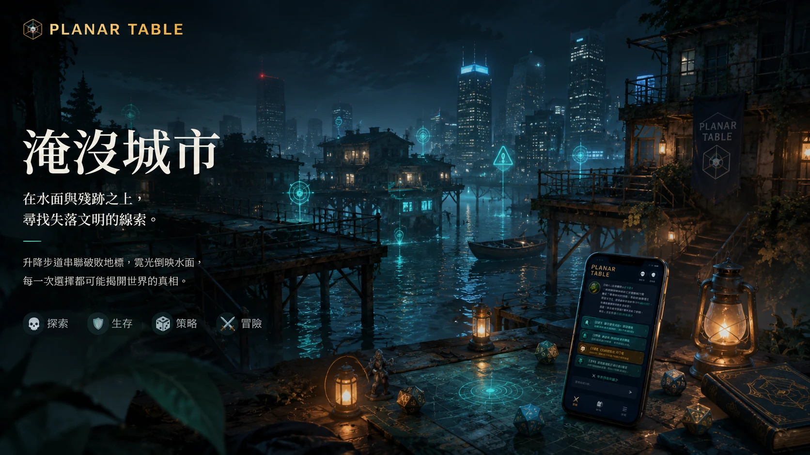
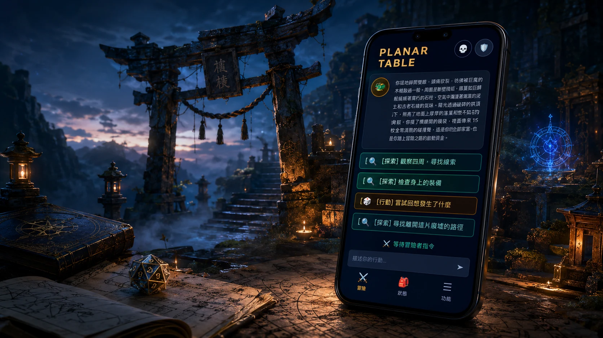
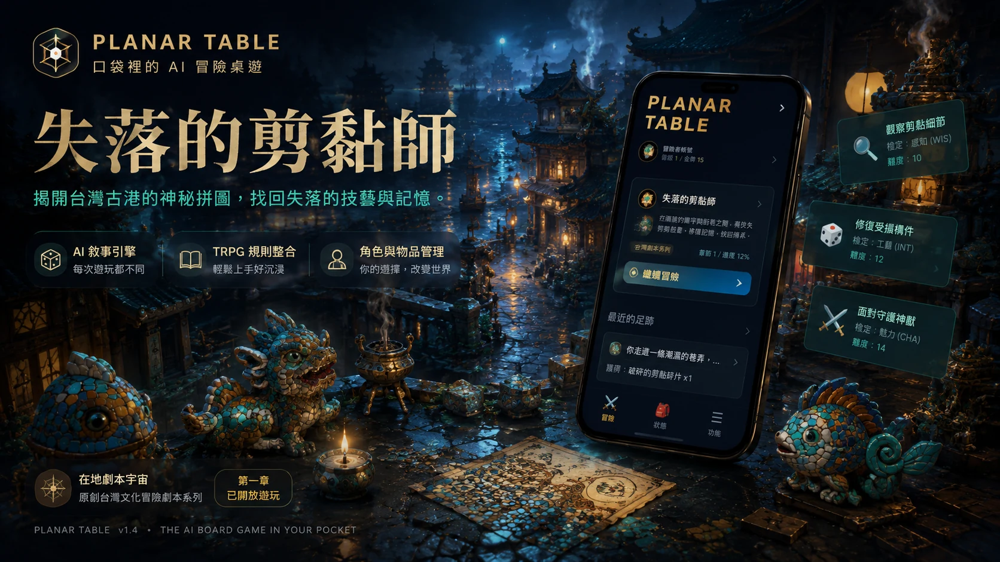
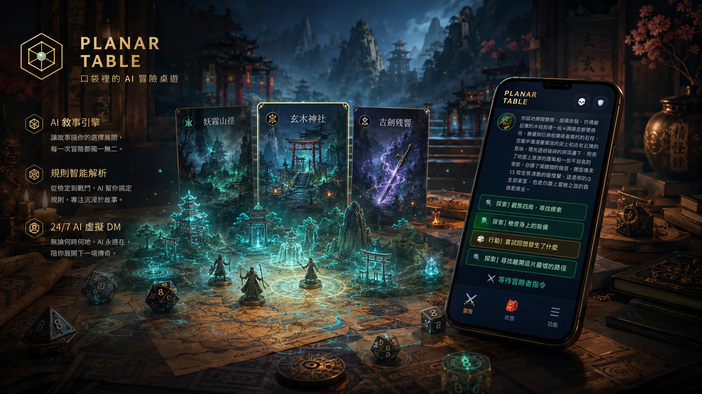

選擇劇本
福爾摩沙傳奇、經典地城、自訂開場或命運隨機，先讓玩家 30 秒進入故事。
Planar Table 把 TRPG 的自由敘事、D&D 5e 的規則判定與桌遊儀式感整合成 30 秒可開局的單人冒險。AI 虛擬 DM 負責讓世界呼吸，雙核規則層負責 HP、金幣、骰子與物品落盤。
網站視覺已重新對齊產品：深海軍藍、骰面金、行動端 MVP、AI 地城主持人、台灣在地幻想與可落盤的桌遊規則。
新版圖片以實機畫面為核心重新生成，保留你們截圖中的三分頁邏輯，再提升材質、間距與品牌一致性。



這次補上更多情境圖，讓首頁不只是一張主視覺，而是能看出 Planar Table 的劇本世界：山林神社、港城工藝、淹沒城市與會發光的冒險桌。




福爾摩沙傳奇、經典地城、自訂開場或命運隨機，先讓玩家 30 秒進入故事。
把種族、職業、屬性與背景拆成視覺化步驟，讓新手不需先讀規則書。
玩家用自然語言做任何事，系統負責抽取意圖、擲骰、更新 HP 與物品。
AI DM 依照已落盤的結果生成下一段敘事，讓自由度與公平性同時存在。